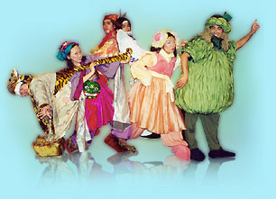

定義
什麼叫做戲劇？
戲劇一詞包括文字的「劇本」和在舞臺上的「演出」，前者叫「戲劇文學」，在英文中叫做drama，後者叫「劇場」，英文叫 theatre。
戲劇的本質是娛樂觀眾。觀眾去看戲是以娛樂為主的一種活動。雖然有時候我們也可以在戲劇中得到某種智識，但是那不是我們去看戲的原本目的，或者說：傳授智識不是戲劇的主要功能。例如老師在上課、名人在演講、候選人在發表政見等等，目的在傳授智識，或表達意見，和戲劇表演的娛樂本質是不同的。
那麼唱歌、舞蹈呢？
唱歌和舞蹈也都有娛樂的功能，不過缺少了構成戲劇或劇場的兩個非常重要的要素－「戲劇情節」和「戲劇行動」。所謂「戲劇情節」就是在一齣戲中通常都有一個經過戲劇家巧妙安排，有起、承、轉、合的「故事」。「戲劇行動」則是指故事中人物的言行、舉止。簡單地說，劇本是「文學性的戲劇」，把劇本搬到舞臺上來演出叫做「劇場」。

在演出時，演員是舞臺上最重要的藝術家，但是要構成一個完整的劇場還必須有編劇、導演、佈景、燈光、音效、服裝、化妝等許多專門智識的技術人員和行政人員的共同合作，才能完成一場成功的演出。
以前劇場服務的對象是成人，到了二十世紀則出現了專為兒童製作的戲劇－「兒童劇場」（Children's theatre）。